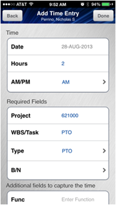
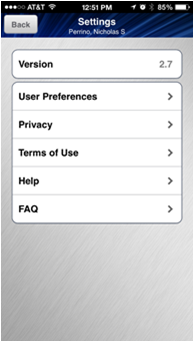

Help
Introduction
This quick start guide provides instructions on how to use the basic features of the Jacobs Mobile App, including:
- Launching and logging into the application
- Creating, modifying, saving and submitting timecards
- Approving and rejecting timecards
- Viewing your PTO Balance
- Viewing Jacobs’s policies
- Configuring user preferences
Mobile Device -Installation Requirements
- Mobile devices currently supported
- iOS - iPhone, iPad, iPad mini, iPod Touch
- Android OS - mobile phones, devices and tablets
- iOS Build - .ipa - iOS application file
- Android Build - .apk - Android application file
Launching and Logging into the Jacobs Mobile App
To launch the application, find and press the Jacobs Apps2Go Icon on your mobile device. The application will open.

Put your finger in the Username field, you will be presented with a keyboard. Type your Username and Password and press the Sign in button:

Upon successful entry of your login credentials, you will be presented with the following screen:
Timecards - Creating, modifying, saving, submitting timecards
In this section we will review creating a new timecard and entering, modifying and deleting timecard lines.
Steps to create a New Timecard
-
From the Home screen press the Timecards icon
Seven of your previously entered and working timecards will be displayed as follows:
-
Press the New button at the top right hand corner of the screen
You will be presented with a list of timecard period end dates.
Press the box next to the desired timecard period. You will then be given the option to create the new timecard based upon your Default Timecard Template (Created in ETS) or based upon your Last Timecard.
To create your timecard based upon your previous timecard, press the square box next to the Last Timecard line
and press the Create button in the upper right hand corner of the screen
Here you will see the timecard entry screen for the period you selected with the timecard lines copied from your last timecard.
-
At the top of the timecard, you will see a list of days. To simply enter hours for the existing lines in your timecard, first select the day of the week for which you wish to enter time by pressing the desired day. The day you have selected will now be highlighted.
-
Now, place your finger anywhere in a line of your timecard.The cursor will blink in the Hrs column for the line you selected and the keyboard will appear allowing you to type your hours.
Press the button on the keyboard to accept your entry. Repeat this process for each timecard line you wish to enter time for.
Notice now that your Hours have been updated in the center section of the screen
-
When you have finished entering hours, press theto-do list button at the top right hand corner of the screen.
You will be presented with a pop-up screen allowing you to either Save, Submit or Delete your timecard. There is also a Home button to return you to the main page.
Press the button to save your timecard. If the save is successful, a Mobile Alert window will appear confirming this.
Press the button to dismiss the alert.
Steps to Modify the additional information in an existingtimecard line
You may need to update additional information for your timecard lines such as the Project and Task.
To do this:
-
Select the blue arrow button at the far right in the timecard line you want to update. You will be presented with the Edit Time Entry screen.
From this screen, you can update the following fields:
- Hours
- AM/PM
- Project
- WBS/Task
- Type
- B/N
- Func
- Shift
- Client Code
-
To enter or modify information, place your finger in the desired field. Depending on the field type, you will either be presented with a keyboard to enter or information or a window will appear allowing you to select an entry from a list.
-
The following screen displays the list that appears when you place your finger in the Type field
Select one of the values by placing your finger on the desired value and pressing the button.
When you are finished modifying the timecard line, press the button at the top right hand corner of the screen to return to your list of timecard lines.
Don’t forget to save your work by pressing the button and selecting in the pop-up window the same way we did above in step 6 of entering a New Timecard.
Steps to Add a Line Item to an Existing Timecard
To do this:
-
First, select the date for which you want to enter hours by pressing the desired day on the list of days at the top of the screen
-
Now, touch anywhere in the area which appears underneath your existing timecard lines.
The Add Time Entry screen will appear allowing you to enter the details for your new timecard line.
 -
Enter your timecard line details and press the button at the top right hand corner of the screen to return to your list of timecard lines.
In this example, we have entered a line for PTO. Notice the Hours Summary area has included these hours as Fringe.
-
Don’t forget to save your work by pressing the button and selecting in the pop-up window the same way we did above in step 6 of entering a New Timecard.
Steps to Delete a Timecard Line
To do this:
-
Select the blue arrow button at the far right in the timecard line you want to update. You will be presented with the Edit Time Entry Screen
Sroll to the bottom of the Edit Time Entry screen and press the button. You will be returned to your list of timecard lines. The deleted line will no longer appear.
-
Sroll to the bottom of the Edit Time Entry screen and press the button. You will be returned to your list of timecard lines. The deleted line will no longer appear.

-
Don’t forget to save your work by pressing the button and selecting in the pop-up window the same way we did above in step 6 of entering a New Timecard.
Steps to Submit a Timecard
Once you have completed and saved all of your timecard information for the period, press the in the top right hand corner of the screen. You will be presented with a pop-up screen allowing you to either Save, Submit or Delete your timecard.
Press the button. Upon successful submission your will receive an alert similar to the following:
Press the button to be presented with a summary of your submitted timecard. You can scroll up and down on this screen to view additional information if it does not all appear on one screen.
-
From this screen, press the Back button to return to your list of timecards. Notice that your timecard now has the status of Submitted.

Approving and rejecting timecards
If you are a timecard approver, you can use the mobile app to review, reject and approve timecards.
-
From the home screen, press the Approvals icon
-
Next, you will see two icons, one for Timecards and another for Expenses. If you have timecards to approve, there will be a red badge attached to the Timecards. The number inside the circle indicates the number of timecards that are awaiting your review and approval
-
Press the Timecards icon to view the list of timecards for the employees whom you can approve for. In the following screen shot, there is 1 timecard that is awaiting approval.
-
To review a timecard, press the name of the employee. You will be presented with the employee’s timecard for the period. To view the details for any day of the timecard, press the blue arrow on the desired day:
To approve an employee’s timecard, press the button at the top right corner of the timecard summary page. You will be presented with the following options:
Press the Approve button . An Alert will appear on the screen indicating the successful approval of the timecard. Press the button to dismiss the alert.
-
To reject an employee’s timecard, first enter your rejection comments. You may need to scroll down on the screen to see the Notes: box. When finished entering your comments, press the button on the keyboard.
-
Now, press the button at the top right corner of the timecard summary page. You will be presented with the following options:
Press the button. An Alert will appear on the screen indicating the successful rejection of the timecard.
Press the button to dismiss the alert.
Viewing your PTO balance
To view your PTO balance follow these steps:
-
From the home screen, press the Useful Info icon
-
Now, press the icon labeled PTO Accounts

-
Here you will see your PTO Balance
Viewing Jacobs’s policies
To view certain policies, follow these steps:
-
From the home screen, press the Useful Info icon
-
Now, press the Policies icon

-
Here, you will see a list of US policies. Press any of these to display the policy on your mobile device.
Configuring user preferences
There are two configurable preferences that can be set on each mobile device. To set these:
-
Press the small gear icon that appears in the lower right hand corner of the main screen.
-
Now press the box labeled
 -
Now you will see the two settings that can be changed once the user has logged into the mobile app.
-
Remember my User ID - When checked, the app will remember your Username. Each time the app is launched, the username that was last used to log into the app will be displayed. Now, just enter your password to log into the app.
Note: Passwords cannot be remembered. In addition, passwords are not stored locally on the mobile device.
-
Enable Notifications - When checked, the app will trigger a daily alert at 9:00 AM reminding you to enter your time for the day.
-
Additional Resources
You can find additional information regarding the Jacobs Mobile App on Jacobs Connect:
Jacobs Connect - Jacobs Mobile Applications